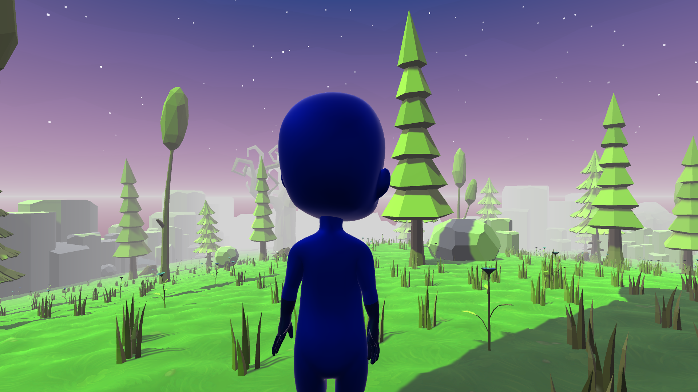
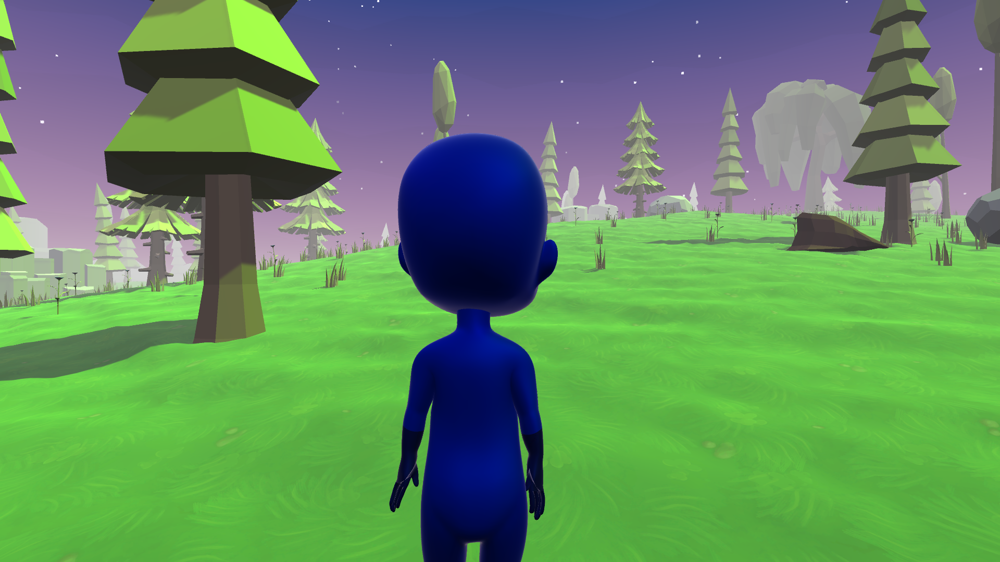
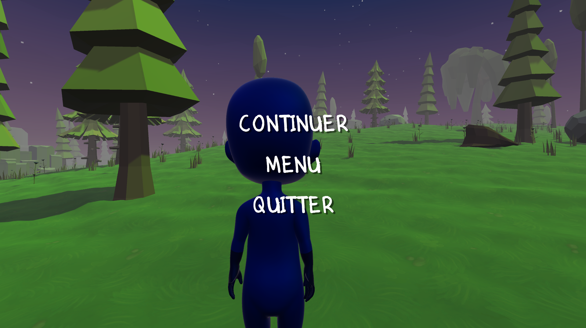
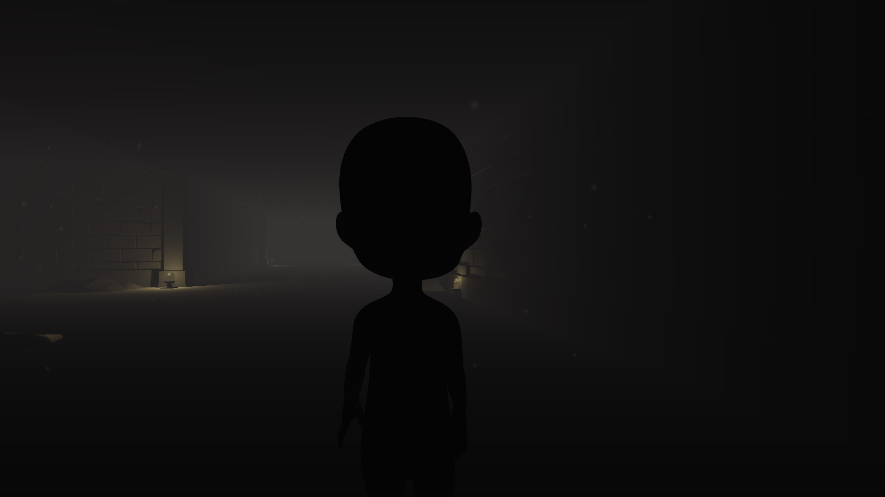
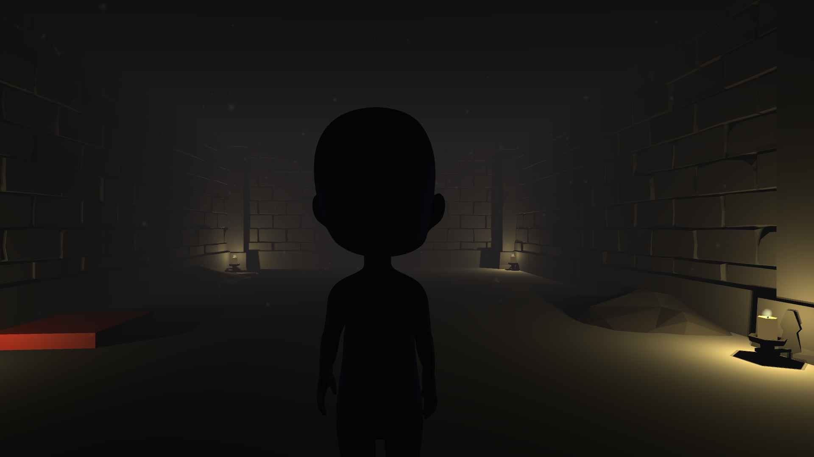
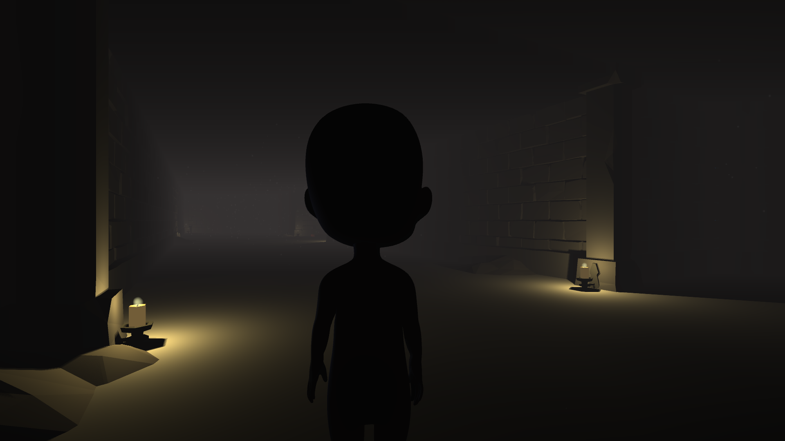

L'eau au coeur de la vie
L'Anthropocène, est une époque où l'Homme est au centre des changements sur Terre
qui surpassent même les forces géophysique. C'est l'une des nombreuses définitions
que l'on peut trouver sur internet. Par ailleurs l'ensemble de ces changements sont
généré par les conséquences de l'activité humaine : abus des ressources naturelles.
J'ai choisi de réaliser un jeu dans lequel le joueur incarne un petit personnage
ayant perdu la mémoire et étant endormi depuis des siècles. L'histoire se place dans
un monde post apocalyptique où la Terre se retrouve être un désert aride dont l'eau
qui l'habitait autrefois à presque entièrement disparue. La mission du personnage sera
de sauver la dernière ville restante sur Terre grâce à ses pouvoirs.
A travers ce jeu, l'importance de l'eau comme source de vie est mise en valeur et surtout le très grand impact de l'Homme peut avoir sur son environnement qui le mènera à sa perte.
Le jeu
C'est un jeu 3D dans un monde semi-ouvert qui se caractérise par trois niveaux : un premier en tant que prologue dont on peut voir quelques image ci-dessous. Le personnage va faire la connaissance d'un petit être qui au cours de l'aventure va être être son guide.



Le niveau suivant est celui de la phase d'éveil, où le personnage se réveillera dans des ruines dans lesquels il va retrouver de nouveau le petit être pour le guider. Une mission sera confié au personnage : restaurer l'eau de la dernière ville restante. J'ai voulue donner une atmosphère beaucoup plus opprésante dans les ruines pour signifier la fin du rêve, du moment paisible. Le tout est accompagné d'une musique de fond que l'on peut entendre dans la rapide démo ci-dessous.



Pour l'instant le jeu est à l'état de démo mais j'ai pu apprendre à utiliser un logiciel
dont je ne connaissais que le nom, il y a quelques mois. Dans la réalisation de ce jeu
j'ai été confronté aux problématiques des développeurs de jeu vidéo : avoir un scénario
qui tienne la route et transformer les idées en quelque chose de concret, ce qui n'est
pas toujours facile.